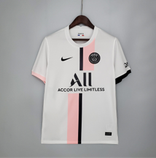

Una de las equipaciones más rompedoras del club parisino, la tercera camiseta presenta un diseño completamente negro con detalles en blanco que reinterpretan el estilo urbano de la marca Jordan, luciendo el escudo del equipo junto al icónico logo Jumpman en el pecho como símbolo de la colaboración entre fútbol y cultura, confeccionada en tejido ligero y transpirable que garantiza comodidad y rendimiento, la equipación que vistieron estrellas como Messi, Neymar y Mbappé en la temporada 2021-2022, consolidando una de las eras más mediáticas del Paris Saint-Germain.
Precio: 44,99€
Comprar